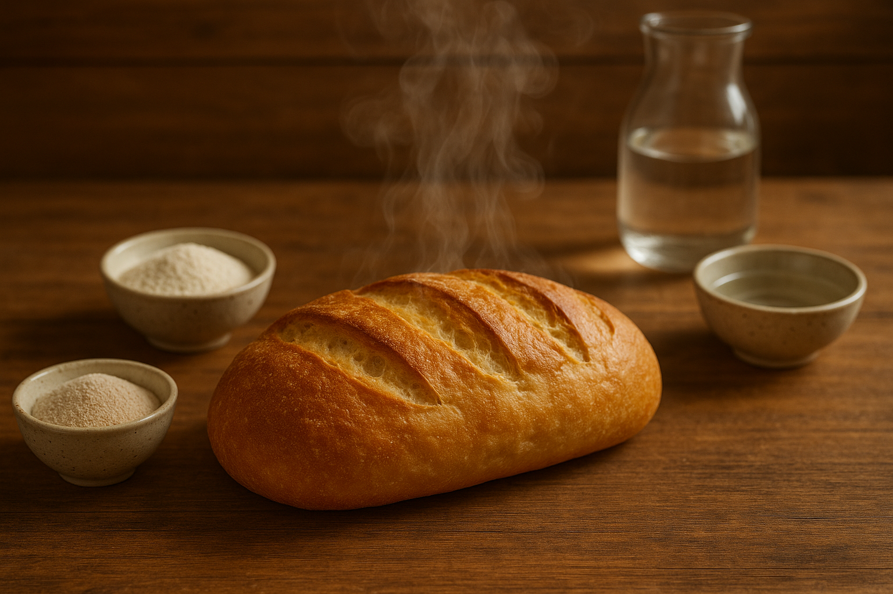

Bread
Home

Description
Bread is a staple food made by baking dough from flour, water, and usually yeast or another leavening agent. It comes in countless varieties, from soft and fluffy to dense and hearty, and serves as the foundation for countless meals worldwide.
Ingredients
- 4 cups all-purpose flour
- 1 tablespoons active dry yeast
- 2 teaspoons sugar
- 1 1/2 teaspoons salt
- 1 1/2 cups warm water (about 110°F or 43°C)
- 2 tablespoons vegetable oil
Steps
- Activate the yeast: In the large bowl, dissolve the sugar in the warm water. Once dissolved, stir in the yeast. Let it stand for about 5-10 minutes, until the mixture becomes frothy.
- Combine ingredients: Once the mixture is frothy, add the salt and oil into the large bowl. Begin by adding 3 cups of flour and mix with the spatula or spoon to combine. Mix in more flour, one cup at a time, until the dough pulls away from the side of the bowl. You may not need to use all 6 cups of flour; once the dough pulls away, you have completed this step.
- Knead dough: Place the dough on a lightly floured surface, and knead with your hands for approximately 7-10 minutes. This involves folding the dough in half, pushing it down with the heel of your hand, and turning it a quarter turn. Once the dough is smooth and elastic, and only slightly sticky, you have completed this step.
- First rinse: Form the dough into a ball and place it in a lightly oiled bowl. Cover the bowl with a clean kitchen towel or plastic wrap. Allow the dough to rise for about 60-90 minutes in a warm, draft-free place. It should double in size. During the last 15-20 minutes of this process, preheat your oven to 375°F (190°C).
- Shape the dough: Punch down the risen dough to release any air bubbles, and knead for 1 minute on a lightly floured surface. Shape the dough into a loaf that is roughly the same width as your loaf pan.
- Second Rise: Place the shaped dough into a greased 9×5-inch loaf pan. Cover the pan with the towel or plastic wrap again and let the dough rise for another 30-45 minutes. The top of the bread should be about 1 inch above the pan.
- Bake the Bread: Remove the cover and place the loaf pan in the preheated oven. Bake for 30-35 minutes, or until the bread is golden brown and sounds hollow when tapped on the bottom.
- Enjoy!: Carefully remove the bread from the pan and let it cool on a wire rack for at least 30 minutes. Once cooled, slice and enjoy your homemade, handmade bread with whatever spreads or toppings you prefer.